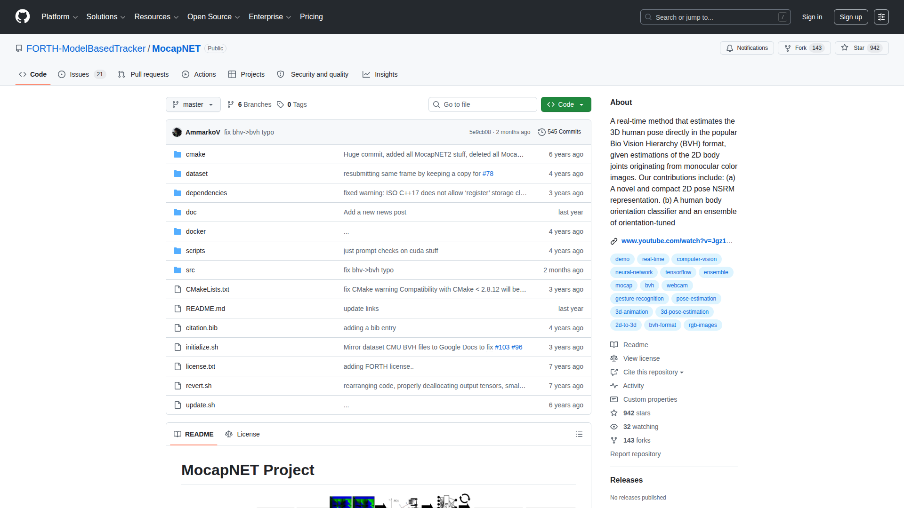

← 返回首頁
MocapNET — 深度調研報告
1. 工具概述
MocapNET 是由希臘 FORTH（Foundation for Research and Technology）研究院開發的即時神經網路 3D 姿態估計系統。最大特色是直接輸出 BVH 格式動畫，無需額外格式轉換。系統基於 OpenPose 2D 偵測結果進行 3D 提升，支援上下半身分離估計與 IK 求解器精修。
核心能力一句話：從影片直接輸出 BVH 動畫檔——唯一原生 BVH 輸出的開源 AI 動捕工具。
解決的問題：
- 其他 AI 動捕工具輸出 SMPL/pkl 格式，需額外轉換
- BVH 是遊戲動畫業界標準格式，直接輸出免去中間步驟
- 即時性需求：需要在合理時間內處理影片
- 上下半身分離追蹤適用於桌面半身畫面

2. 功能詳細說明
功能矩陣
| 功能 | 說明 |
|---|
| 直接 BVH 輸出 | 無需格式轉換，直接產生業界標準 BVH |
| 即時推理 | 接近即時的處理速度 |
| 上下半身分離 | 可獨立追蹤上半身或下半身 |
| IK 精修 | Inverse Kinematics 後處理提升品質 |
| 遮擋容忍 | 部分遮擋情況仍可運作 |
| 手部追蹤 | MocapNET v3 增加手部支援 |
| 攝影機/影片輸入 | 即時攝影機或預錄影片 |
| OpenPose 前端 | 基於 OpenPose 2D 偵測 |
技術規格
| 項目 | 規格 |
|---|
| 輸入 | 影片/攝影機（經 OpenPose 2D 前處理） |
| 輸出 | BVH（直接，不需轉換） |
| 骨架 | CMU MoCap 相容骨架 |
| 關節數 | ~35（含手部更多） |
| 推理引擎 | TensorFlow |
| 支援系統 | Linux（Ubuntu，CMake 編譯） |
| GPU 支援 | 可選 CUDA 加速 |
| 2D 偵測 | OpenPose / OpenCV DNN |
| 精修 | IK Solver（內建） |
| 版本 | v1 → v2 → v3（手部） |
3. 官方影片/教學連結
| 主題 | 連結 |
|---|
| GitHub | https://github.com/FORTH-ModelBasedTracker/MocapNET |
| 論文 v1 (BMVC 2019) | "Single Shot Multi-Person 3D Pose Estimation From Monocular RGB" |
| 論文 v2 | "MocapNET 2.0: Real Time Estimation of 3D Body Pose and Shape" |
| FORTH 研究頁面 | http://amlab.ics.forth.gr/ |
4. 安裝/使用流程
環境需求
- Linux（Ubuntu 18.04/20.04 建議）
- CMake 3.x+
- OpenCV 4.x
- TensorFlow C API
- （可選）CUDA + cuDNN
安裝步驟
<h1>Clone</h1>
git clone https://github.com/FORTH-ModelBasedTracker/MocapNET
cd MocapNET
<h1>下載模型與依賴</h1>
./initialize.sh
<h1>編譯</h1>
mkdir build && cd build
cmake ..
make -j$(nproc)
<h1>下載範例影片</h1>
wget [範例影片 URL]
使用
<h1>從影片生成 BVH</h1>
./MocapNET2 --from video.mp4 --openpose
<h1>即時攝影機</h1>
./MocapNET2 --from /dev/video0
<h1>僅上半身</h1>
./MocapNET2 --from video.mp4 --upperbody
<h1>指定輸出</h1>
./MocapNET2 --from video.mp4 --bvh output.bvh
輸出流程
影片 → OpenPose 2D → MocapNET 3D 推理 → IK 精修 → BVH 輸出
5. 定價與授權
| 項目 | 價格 | 授權 |
|---|
| MocapNET 程式碼 | 免費 | GPL v3（開源） |
| 模型權重 | 免費 | 隨程式碼下載 |
| OpenPose（依賴） | 免費 | 非商業 / 商業需另購 |
商用授權說明：
- MocapNET 本身 GPL v3：開源可商用（但衍生作品需開源）
- OpenPose 授權問題：OpenPose 的商業使用需向 CMU 購買授權
- 若使用 OpenCV DNN 替代 OpenPose，可迴避授權問題
- 輸出的 BVH 動畫資料本身不受授權限制
6. 優缺點分析
優點
- ✅ 直接 BVH 輸出：唯一原生 BVH 輸出的開源方案，免格式轉換
- ✅ 骨架相容性好：CMU MoCap 相容骨架，與業界工具無縫整合
- ✅ IK 精修：內建 IK 求解器提升品質
- ✅ 上下半身分離：適合桌面/半身場景
- ✅ 開源免費：GPL v3，學術和商用（含開源義務）
- ✅ 無 SMPL 依賴：不受 MPI 商用授權限制
缺點
- ❌ 僅 Linux：不支援 Windows/macOS
- ❌ 安裝複雜：CMake 編譯 + 多重依賴
- ❌ OpenPose 商用問題：依賴 OpenPose 的授權
- ❌ 精度不如最新 SOTA：2019-2021 架構，不如 4D-Humans
- ❌ 維護不活躍：GitHub 近年更新較少
- ❌ GPU 非必要但影響速度：CPU 模式較慢
7. 與 Kimodo 的整合可能性
| 比較項目 | MocapNET | Kimodo |
|---|
| 輸入 | 影片 | 文字 prompt |
| 輸出 | BVH（直接！） | BVH |
| 格式相容 | ⭐⭐⭐⭐⭐ | ⭐⭐⭐⭐⭐ |
| 精度 | 中 | 中高 |
| 手指 | v3 有基礎支援 | ❌ |
| 商用 | ⚠️ OpenPose 限制 | ✅ |
| 即時性 | 接近即時 | 離線 5-6 分鐘 |
推薦整合方式
[MocapNET 從影片提取 BVH]
↓
[與 Kimodo BVH 格式完全相同]
↓
[ARP Remap 重定向到角色] → [引擎]
MocapNET 和 Kimodo 輸出格式完全一致（BVH），可使用同一套後處理管線（ARP Remap），形成「影片→動作」和「文字→動作」的雙軌並行。
8. 對 AI 動作量產工作流的貢獻定位
定位：影片→BVH 的直通管線（免格式轉換）
路線 A（影片源）：
[參考影片] → [MocapNET] → [BVH] ─┐
├→ [ARP Remap] → [引擎]
路線 B（文字源）： │
[Prompt] → [Kimodo] → [BVH] ──────┘
量產流程中的角色：
- 影片→動作的「免轉換」備選方案
- 精度不如最新方案但格式最友好
- 適合快速批次從影片提取大量基礎動作
- Linux 環境限制降低了日常使用便利性
9. 總結評分
| 項目 | 評分 | 說明 |
|---|
| 動作品質 | ⭐⭐⭐ | 可用但不如 SOTA |
| 易用性 | ⭐⭐ | Linux only + 編譯安裝 |
| 性價比 | ⭐⭐⭐⭐ | 免費開源 |
| 量產適用性 | ⭐⭐⭐ | BVH 直出是大優勢 |
| 整合便利性 | ⭐⭐⭐⭐⭐ | BVH 格式 = 零轉換成本 |
| 商用合規 | ⭐⭐⭐ | GPL OK，但 OpenPose 需注意 |
10. 行動建議
- 在 WSL/Linux 環境編譯測試：評估實際輸出品質
- 測試 OpenCV DNN 模式：迴避 OpenPose 商用授權問題
- 建立 BVH 品質比較基準：MocapNET vs Kimodo vs 手動製作
- 考慮作為備選方案：當有現成影片素材且 Kimodo prompt 難以描述時使用
- 關注後續更新：若 v4 出現可重新評估
參考資料
- GitHub：https://github.com/FORTH-ModelBasedTracker/MocapNET
- FORTH 實驗室：http://amlab.ics.forth.gr/
- OpenPose 授權：https://github.com/CMU-Perceptual-Computing-Lab/openpose/blob/master/LICENSE